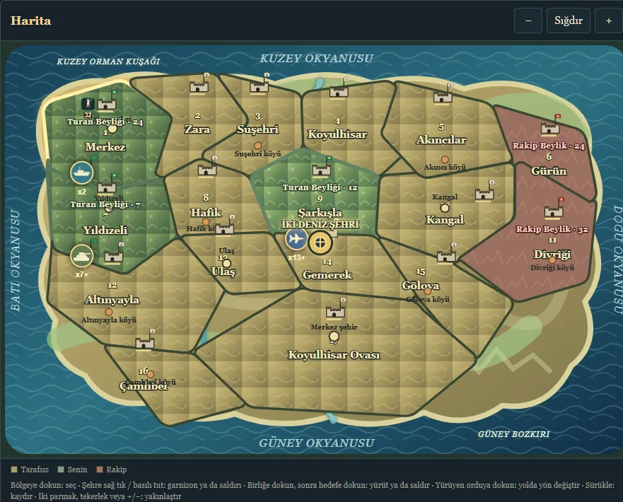

Sivas 5-8
A browser game prototype with no external libraries, built on resource management and regional decisions, inspired by the history, geography and cultural memory of Sivas. The game itself is currently in Turkish.
Screenshot

Project overview
The player advances across the map with limited resources and sees the effect of each decision in the balance of resources, units and regions. The aim is a local strategy experience that is quick to learn but deepens with every replay.
Technology
Development process
- A single-file prototype of the map, resources and units screen was built.
- Touch and mouse interactions were made mobile-first.
- The game was separated from the home page so that it opens only when the user chooses it.
- A real rival was added: a principality founded at the other end of the map collects income, recruits soldiers and tries to conquer neutral land and the player's border regions.
- Victory/defeat conditions and automatic in-browser saving (“continue the saved campaign”) were added.
- Five war difficulties were added (Başlangıç, Amatör, Orta, Zor and Fatih: from beginner to “conqueror”); the levels were tuned by simulation against both an idle player and a rule-based bot.
- The interface was simplified and matched one-to-one on phones: the same content, tap to select and march, pinch to zoom, windows that slide up from the bottom.
- A walled castle was added to every district: while the walls stand, the garrison takes little damage, so they must first be broken by siege. Armies march as a galloping cavalry column behind a commander with a banner; hoofbeat, sword and battle-cry sounds are generated in the browser with Web Audio.
- Every brigade became an object on the map: a new unit appears in its city; tap the unit, then a target, to march or attack. Right-clicking a city (long-pressing on a phone) opens the “Manage garrison” window, where units are moved into or out of the castle. Units are drawn by type: F-35, KAAN, UAV, attack helicopter, tank, warship, infantry and mounted general.
- Armies can now be controlled on the move: tapping a marching army shows its route; tap a new region to change course, or call it back with “Return”. An arriving army neither enters the castle nor merges with other units; it waits above the region as a separate unit for orders.
- Siege camps were added: survivors pitch tents in front of a castle that did not fall and, once regrouped, can attack again or withdraw. The rival responds: if its castle is strong enough it sallies out to break the camp; otherwise it pulls reinforcements from neighbouring castles. When a unit and a marching army overlap, the one closer to the tap is selected; tapping the same spot again switches to the other.
- The game's code was moved out of the page into its own file (game.js) and the page got a Content Security Policy: the browser runs only code from this site, and the game sends no requests anywhere.
- Next goal: a mission flow and broader balance testing.
Status
This version is a demo that can be played from start to finish: whoever takes the rival principality's last territory wins, and whoever loses all their territory is defeated. Depending on the chosen difficulty, the rival allows a period of peace, then attacks weak borders. The same game is played on desktop and on phones. Content and strategic depth will be developed iteratively.
View the source project on GitHub →